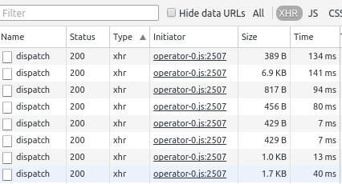
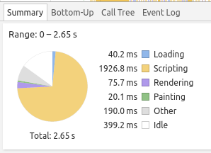

Тестирование програмного обеспечения
Как это?
Колмогорцев Дмитрий / dkolmogortsev@naumen.ru
План:
- Собственно, зачем тестировать?
- Виды тестирования
- Инструменты
- TDD
- BDD
- UI-Testing
- Stress testing
Зачем тестировать?
Проверить, что багов нет!
А вот и нет!
Цели тестирования:
- Определить, что продукт соотвествует заявленным требованиям
- Адекватно работает при любом наборе входных данных
- Выдает результат за адекватное время
Ручное тестирование
- Довольно затратно
- Тестировать регрессию еще более затратно
- Порой имеет место человеческий фактор
Автоматизированное тестирование
- Тоже не бесплатно
- Тестировать регрессию почти ничего не стоит
- Суждение робота неизменно
- Человеческий фактор, все таки тоже имеет место быть
AT

Модульное тестирование
(Unit testing)

Sample
package org.testingtalk.account;
import java.util.concurrent.ConcurrentHashMap;
import java.util.concurrent.atomic.AtomicInteger;
public class AccountInfoService
{
private final AtomicInteger idSequence = new AtomicInteger();
private final ConcurrentHashMap<Long, AccountInfo> accountsData = new ConcurrentHashMap<Long, AccountInfo>();
public AccountInfo createNewAccountInfo(){
AccountInfo newInfo = new AccountInfo(idSequence.getAndIncrement());
accountsData.put(newInfo.getAccountId(), newInfo);
return newInfo;
}
...
}
Как бы протестить?
- Подготовить данные
- Что-то сделать с данными
- Проверить результат дейсвтий
- Убрать за собой, если требуется
В первом приближении
public static void main(String[] args)
{
//Подготовка
AccountInfoService service = new AccountInfoService();
//Действия
AccountInfo info = service.createNewAccountInfo();
//Проверка
assert 0 == info.getBalance();
}
А можно не через main?
Можно - JUnit
import static org.junit.Assert.*;
import org.junit.Test;
public class AccountInfoTest {
@Test
public void testNewInfoBalanceIsZero(){
//Подготовка
AccountInfoService service = new AccountInfoService();
//Действия
AccountInfo newInfo = service.createNewAccountInfo();
//Проверка
String message = "Balance is non zero"
assertEquals(message,0, newInfo.getBalance());
}
}
JUnit аннотации
public class BaseTest{
@BeforeClass //Действия перед запуском класса
public static void setupClass() {}
@Before //Действия перед зауском теста
public void setup() {}
@After //Действия после завершения теста
public void tearDown() {}
@AfterClass //Действия после завершения тестового класса
public void tearDownClass() {}
}
Можно и так
public class ConreteTest extends BaseTest{
//Действия перед запуском тестов
//Для данного класса, в дополнение к BaseTest#setup()
@Before
public void setupConcrete() {}
...
}
@Test
@Retention(RetentionPolicy.RUNTIME)
@Target({ElementType.METHOD})
public @interface Test {
//Какой Exception мы ожидаем при тесте
Class<? extends Throwable> expected() \
default Test.None.class;
long timeout() default 0L; //Таймаут выполнения теста
public static class None extends Throwable {
private static final long serialVersionUID = 1L;
private None() {
}
}
}
Что может быть
public class AccountInfoServiceTest {
private AccountInfoService service;
@Before
public void setup(){
this.service = new AccountInfoService();
}
@Test(expected = IllegalArgumentException.class)
public void testErrorWhenLoadNull(){
this.service.getInfo(null);
}
@Test(timeout = 1000)
public void testLoadWithinASecond(){
this.service.get(1);
}
}
Интеграционное тестирование

Как быть с зависимостями?
- Удовлетворять зависимости реальными объектами
- Использовать моки( Mocks )
- Использовать stub
Функциональное тестирование ( UI )
Selenium
Инcтрумент для автоматизированного тестирования WEB-приложений- Selenium WebDriver
- Selenium Grid
Selenium Webdriver
- Реализация на многих языках
- Из коробки поддерживает управление Firefox
- Можно научить управлять даже IE
Samples
// Создаем новый webdriver с указанием на банарник firefox
WebDriver wd = new FirefoxDriver(new FirefoxBinary(
new File("D:\\ff\\firefox.exe")), new FirefoxProfile());
Samples
// Открываем гугл
wd.get("http://www.google.com");
Samples
final String searchString = "selenium";
// Находим поисковую строку и ищем "selenium"
WebElement searchBox = wd.findElement(By.name("q"));
searchBox.sendKeys(searchString);
searchBox.submit();
Samples
// т.к. google асинхронный - ждем поисковой выдачи
(new WebDriverWait(wd, 10)).until(new ExpectedCondition<Boolean>() {
public Boolean apply(WebDriver d) {
return d.getTitle().toLowerCase().startsWith(searchString);
}
});
Samples
// закрываем webdriver
wd.quit();
All together
public class SeleniumSample {
public static void main(String[] args) throws InterruptedException {
// Создаем новый webdriver с указанием на банарник firefox
WebDriver wd = new FirefoxDriver(new FirefoxBinary(new File(
"D:\\ff\\firefox.exe")), new FirefoxProfile());
// Открываем гугл
wd.get("http://www.google.com");
final String searchString = "selenium";
// Находим поисковую строку и ищем "selenium"
WebElement searchBox = wd.findElement(By.name("q"));
searchBox.sendKeys(searchString);
searchBox.submit();
// т.к. google асинхронный - ждем поисковой выдачи
(new WebDriverWait(wd, 10)).until(new ExpectedCondition<Boolean>() {
public Boolean apply(WebDriver d) {
return d.getTitle().toLowerCase().startsWith(searchString);
}
});
// закрываем webdriver
wd.quit();
}
}
Когда тесты запускать?
- Всегда
- Написал код - запусти тесты
- При сборке проекта
- В CI
Нагрузочное тестирование
Проблема
- Написана новая версия продукта - 4.0 (прошлая 3.8)
- Старой пользуется много крупных клиентов(большое кол-во пользователей одновременно)
- Новый продукт, конечно, прекрасен, но мы не знаем насколько хорошо он работает
- Нужно сэмулировать работу пользователей
Тестирование производительности
Проверить как быстро может работать система или её компоненты
Что можно проверить:
- Время отклика
- Время отображения
- Пропускную способность
Время отклика
Время отображения
Пропускная способность
Виды тестирования производительности:
- Нагрузочное(load)
- Стресс (stress)
Нагрузочное тестирование
Цель: проверить показатели работы приложения при ожидаемой нагрузкеСтресс тестирование
Цель: проверить показатели работы приложения при диспропорциональной нагрузкеStress in a nutshell
Процесс проведения
- Определяем требуемые показатели
- Определяем сценарий нагрузочного тестирования
- Проводим тестирование*
- Собираем результат
- ??????
- PROFIT, а может и нет
*Проводить тестирование всегда стоит на одном и том же сервере
JMeter
Умеет тестировать:
- Web
- JDBC
- и другое
Получаем сценарий
Два пути:
- Написать запросы руками
- Записать сценарий из браузера
Запись сценария